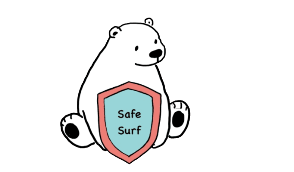

SafeSurf
Design Learnings
To better help understand our users, we created design personas, scenarios and user journey maps. These artifacts condense the raw data we gathered through our research into a tangible summary.
Ideation
"SafeSurf" is an innovative educational platform designed to teach internet safety skills to children aged 9-12. In the digital age, where online interactions are integral to everyday life, educating the younger generation about safe internet practices is crucial. The core objective of "SafeSurf" is to simulate real-world online scenarios, allowing children to experience and navigate potential risks in a controlled, educational environment. This proactive approach in a gamified, interactive setting makes learning both fun and impactful, ensuring that the lessons learned will stick with them as they grow. The ideation process for the "SafeSurf" project was centered around our personal experiences through the lens of our siblings. This process was both iterative and collaborative.
User Needs and User Journey
User journey mapping helped us visualize how a user would interact with a product even before we created a prototype version of it. Moreover it allowed us to see the product from the users perspective to reach the goal. The feedback from evaluators who have experience with younger siblings highlighted several critical needs:- Children respond positively to learning when it mimics real-life experiences. Our evaluators noted that the simulation style of the interaction was particularly engaging. This tells us that our design needs to closely mimic real-world social media environments to maintain authenticity and engagement.
- The addition of progress bars was well-received as it helps users understand how far they have come in their learning journey. This feedback supports the need for visible learning milestones and rewards, which help motivate and guide young users through the educational content.
- Insights from the evaluations emphasize the importance of effective error handling and clear instructions. Users need to understand what mistakes they've made and how to correct them in a way that is both informative and supportive.

- The participant was confused by the simplicity of the home page, questioning why there wasn't more information presented.
- She expressed curiosity about whether the application offered more functionality beyond the chatbox. This indicates a desire for a more diverse set of features and activities within the app. Her feedback has led us to consider implementing additional interactive elements that could include quizzes, games, and more diverse scenarios, which might help in providing a fuller and more engaging educational experience.
- The participant noticed that during lulls in the conversation, the chatbot failed to provide engaging and productive prompts. Enhancing the chatbot’s ability to keep the conversation flowing and engaging is essential, especially to maintain the attention of young users and ensure the educational content is delivered effectively.
Finalized User Journey
Get in touch
-
SafeSurf
200 S 33rd St,Philadelphia, PA - 267-876-9898